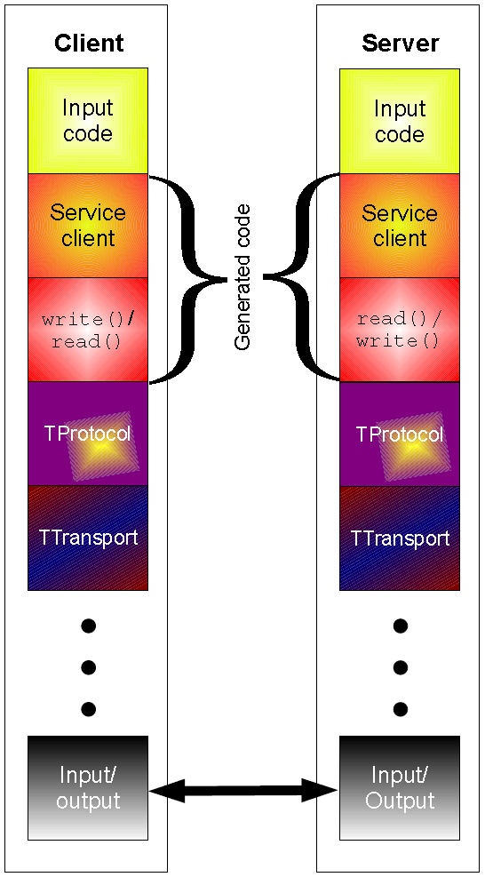

RPC 微服务框架 Kitex 的入门实践
摘要
Kitex 是字节跳动开源的 Golang 微服务 RPC 框架，基于 Apache Thrift，具有高性能、强可扩展的特点，在字节内部已广泛使用。本篇是 Kitex 入门系列的第一篇，梳理相关的概念，并从案例上手实践。
Thrift
Thrift是一个轻量级、跨语言的远程服务调用（Remove
Procedure
Call，RPC）框架，最初由 Facebook 开发，后面进入 Apache 开源项目。它通过自身的 IDL中间语言（Interface
Description Language，接口描述语言）,
并借助代码生成引擎生成各种主流语言的 RPC服务端 / 客户端模板代码。
Thrift 的一大优势就是可以跨语言代码生成，支持 C++, Java, Python, PHP, Ruby, Erlang, Perl, Haskell, C#, Cocoa, JavaScript, Node.js 等语言。
架构
Thrift API 的客户端 - 服务端架构图如下所示：
- 顶层是根据 IDL 生成的客户端 / 服务端代码
- 协议层（TProtocol）定义了序列化和反序列化的协议，包含 TBinaryProtocol （二进制协议）、TCompactProtocol （压缩二进制协议）、TJSONProtocol（JSON 文本）、TSimpleJSONProtocol 等
- 传输层（TTransport）定义了网络传输的方式，基于 TCP/IP 协议，包含 TSocket（阻塞 Socket）、TSimpleFileTransport（文件传输）、TFramedTransport（帧传输）等

服务端模型
Thrift 支持以下几种服务端模型：
- TSimpleServer：简单的单线程服务模型，常用于测试；
- TThreadedServer：多线程服务模型，每个连接新建线程，使用标准阻塞 IO；
- TThreadPoolServer：多线程服务模型，使用线程池，使用标准的阻塞式 IO；
- TNonblockingServer：多线程服务模型，使用非阻塞式 IO（需使用 TFramedTransport 数据传输方式）；
IDL
基础数据类型
- bool：布尔型（true or false）；
- byte：8bit、有符号整型。
- i16、i32、i64：16/32/64 bit 有符号整型。
- double：64 位浮点数
- string：UTF-8 字符串
没有定义无符号整数类型，因为很多语言中没有原生的无符号整数类型。
特殊类型
- binary：字节序列
结构体
使用 struct 定义，一系列字段的集合，不支持继承。一个例子如下所示。结构体中每个字段需要用唯一的整型标识，用于序列化与反序列化，可以通过 required/optional 关键字定义字段是否必须，可以用 = 指定默认值。
1 | struct Work { |
Thrift 支持以下三种字段必要性标识，决定了序列化和反序列化的行为：
required
- 写：字段总是被写入，需要被赋值
- 读：字段总是被读取，输入流中必须包含，如果缺失则会抛出异常或者返回 error
- 默认值：总是被写入
- required 字段会限制版本的平滑过渡。如果新增 / 移除了 required 字段，都可能导致读取失败。
optional
- 写：只有被设置了才会被写入
- 读：可能出现在输入流中，也可以不存在
- 默认值：只有当设置了
isset标识才会写入 - 很多语言的实现中，使用
isset标识可选字段是否被赋值。只有设置了这个标识的字段才会被写入，反过来只有输入流中存在该字段才会设置isset
default（隐式默认）
- 写：理论上，总是被写入，除非特殊情况
- 读：与 optional 类似，可能出现在输入流中，也可以不存在
- 默认值：可能不会被写入
default 类似 required 和 optional 的混合，取决于具体的实现。例如，实现中可以不写入默认值，因为假设读取时会自动补充默认值；也可以写入默认值，没有限制不能这么做。
需要注意的是，未写入的默认值成为了 idl 版本的一部分，如果后续默认值出现了变更，接口就会发生变化。而如果默认值被写入了，即使 IDL 中的默认值改变，也不会影响序列化数据。
- 也就是说，不把默认值写入，读取侧只能依赖于 idl 中的默认值填充。写入了默认值，读取侧就可以只从数据中读取了。
容器
- map<type1,type2>：键值字典
- list<type>：有序列表
- set<type>：无序集合
理论上，容器的类型可以是任意合法的 Thrift 类型。但为了兼容性考虑，map 的 key 应当是基础类型。这是由于一些语言不允许复杂的键类型。此外，JSON 中也只支持基础类型的 key。
异常
异常在语法和功能上类似于结构体，只不过异常使用关键字 exception 而不是 struct 关键字声明。但它在语义上不同于结构体，当定义一个 RPC 服务时，开发者可能需要声明一个远程方法抛出一个异常。在 Golang 中，不使用异常机制，因此可以忽略。
1 | exception InvalidOperation { |
服务
服务类似于接口，是一系列抽象函数的集合。函数的声明与 C 中文法类似，返回类型在最前，然后是函数名、参数列表（每个参数需要整型 id 标识）。一个例子如下所示，函数可以使用 oneway 标识符表示 client 发出请求后不必等待结果，也就是异步调用。
1 | //“Twitter”与“{”之间需要有空格！！！ |
service 可以通过 extends 关键字继承另一个 service。
枚举类型
使用 enum 关键字定义
1 | enum TweetType { |
令人难过的是，Golang 中没有原生的枚举类型。
常量
使用 const 关键字定义，复杂的类型和结构体可使用 JSON 形式表示。
1 | const i32 INT_CONST = 1234; // 分号是可选的 |
类型别名
与 C 类似，可以使用 typedef 关键字为类型声明别名
1 | typedef i32 MyInteger |
命名空间
namespace 关键字，可以为每种语言单独声明，用于隔离代码（例如 Go
module、Java package 等），语法如下：
1 | namespace cpp com.example.project |
最佳实践
- struct 中任何新加的字段都不能是
required，以防新旧版本不兼容出现的报错。 - 不要修改 struct 中已有字段的 id 值。
- 非必须的字段可以移除，但 id 值不要复用。更好的方式是使用
OBSOLETE_前缀标识已被废弃。 - 可以更改默认值，但要牢记默认值不会序列化，接收方会使用自身的 idl 填充默认值，导致不一致。
Kitex
架构
Thrift 可以实现 idl 的定义与客户端 / 服务端代码生成，通过传输层和协议层完成 RPC 交互，但缺失 RPC 框架的高级特性，例如服务注册、发现、监控等。为此，字节结合内部的治理能力，开发了 Kitex框架，架构如下所示：
可以看到，Kitex 以模块化的方式，支持服务注册 / 发现、负载均衡、熔断、限流、重试、监控、链路跟踪、日志、诊断等服务治理模块，大部分均已提供默认扩展，使用者可选择集成。
此外，Kitex 还支持不同的第三方包，例如使用了自研的高性能网络库 Netpoll，通过 epoll + 协程池，提高网络 IO 性能。KItex 也支持多种消息协议，包含 Thrift、Kitex Protobuf、gRPC 等，以及多种传输协议，包含 TTHeader、HTTP2 等。
快速上手
按照快速开始 | CloudWeGo 安装 Go 环境与 kitex 工具。
新建项目 kitex_started，新建如下的 idl 文件 hello.thrift：
1 | namespace go hello_world |
在 idl 中，定义了一个服务，两个函数。然后使用如下命令进行代码生成，-module 用于指定包名，需要与 go.mod 中的一致，-service 表示生成服务端代码，并指定了服务名，最后是 idl 的路径。
1 | kitex -module "kitex_started" -service a.b.c hello.thrift |
接着会发现，go.mod 包含以下内容，注意 replace 一行是由于 kitex 使用的是 0.13.0 版本的 thrift，高版本的不兼容。
1 | module kitex_started |
接着，运行 go mod
tidy 安装依赖，就不会有红线报错了。我们得到了如下的项目结构：
1 | ❯ tree -r |
handler.go
服务的实现类，$HelloImpl 实现了 idl 中的 Hello 接口，不同的是，参数列表中增加了透传的 context，以及返回值中增加了 error。我们需要在这里实现业务逻辑。
1 | package main |
main.go
项目的入口，代码很简单，新建了一个 server 并开始运行。注意这里 import 的路径不同，虽然都被重命名为了 hello_world
1 | package main |
kitex_info.yaml
包含了服务名和版本信息。
1 | kitexinfo: |
kitex_gen
hello_world 包（idl 中的 namespace）下，有以下文件 / 目录：
hello.go：定义了 idl 中的各种类型，例如HelloType,Request,Response等，提供了Get/Set, Read/Write方法k-consts.go：没什么用k-hello.go：各种类型的 FastRead/FastWrite 编解码实现，性能更好hello/：Hello Service 相关代码client.go：暴露NewClient函数，新建实现了Hello接口的 Client 对象hello.go：暴露NewServiceInfo函数，Service 信息，注意服务名是 idl 中的 Service，即Helloserver.go：暴露NewServer函数，用于启动服务invoker.go：暴露NewInvoker函数，没有找到用法
分析目录结构可以看出，当我们需要新建某个 Service 的 Client/Server 时，需要 import 对应的 Service 包，使用 NewClient/NewServer 函数；如果只是使用 idl 中定义的结构体，只需要 import 对应 namespace 的包即可。这也解释了上面 import 路径的不同。
运行
填好 handler 逻辑：
1 | // Echo implements the HelloImpl interface. |
在 client/main.go 编写客户端代码：
1 | // Copyright 2021 CloudWeGo Authors |
kitex
server 默认监听端口为 8888，可以通过 WithServiceAddr 配置。接着，在项目根目录运行 go
run
. 命令，可以观察到如下输出，证明服务端已启动，监听 8888 端口：
1 | ❯ go run . |
在另一个 shell 中运行 go run
client/main.go，可以得到如下输出：
1 | ❯ go run client/main.go |
证实客户端请求成功到达服务端，并正确处理返回。
总结
本篇博客中，梳理了 Thrift 和 Kitex 的相关概念，通过一个简单的案例上手实践，分析项目结构并成功验证结果。作为框架的使用者，我们已经可以了解到基本用法，进一步深入原理是可选步骤。后面我会进一步分析请求的处理过程，来弄清楚易用性的背后，框架的底层运行机制是怎样的。